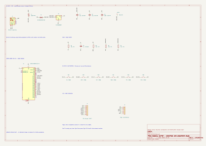
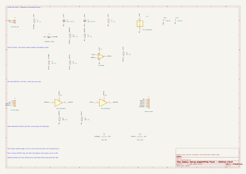

Especcy electrical study
Revision A · 4 October 2026 · editable KiCad 10 circuits and an unrouted carrier placement.
Physical acceptance remains open
Both circuits pass ERC and the carrier matches the firmware pin map. Board DRC retains one USB shell-stake conflict with the Down switch, plus expected unrouted connections. Regulator heat, fuse derating, the 1.8 mm plunger versus the recommended 1.0 mm tip, switch-height tolerance and LCD modification need physical qualification.
Design and bench handoff · Electrical checks · Fit findings · Thermal calculations
Carrier placement
USB at bottom in both views. Solid boxes show selected package envelopes on that face; dashed boxes show the other face. Gold dots indicate pads. Numbered pogo pads are 1 GND, 2 sense only, 3 device TX, 4 device RX, 5 EN, 6 BOOT. These diagrams show placement, not routing.
Carrier schematic

Editable schematic · Unrouted board · Carrier BOM · LCD module BOM
Manual fixture reference

Editable schematic · Fixture BOM · Rail monitor calculations